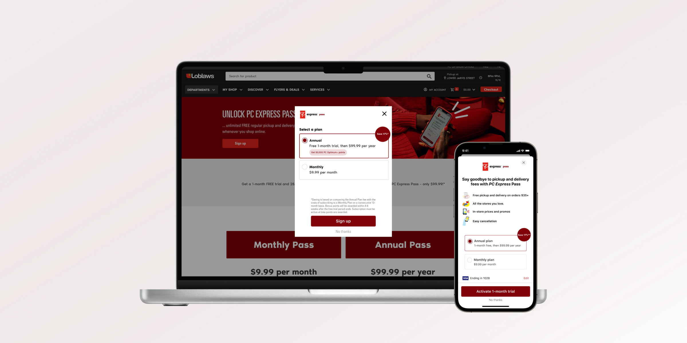
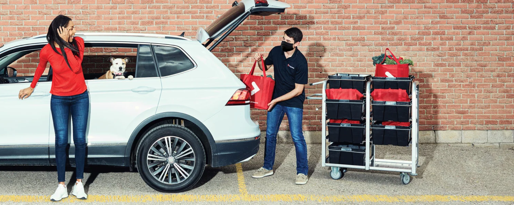
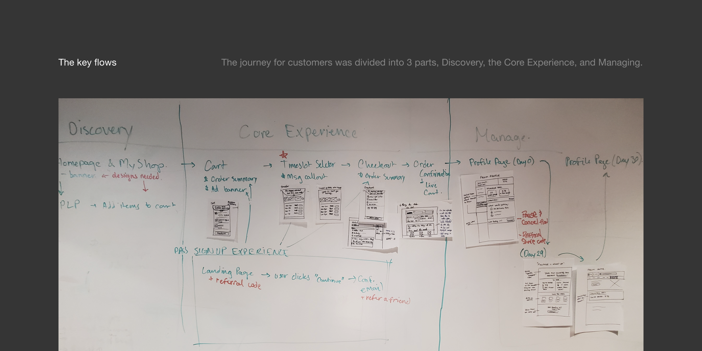
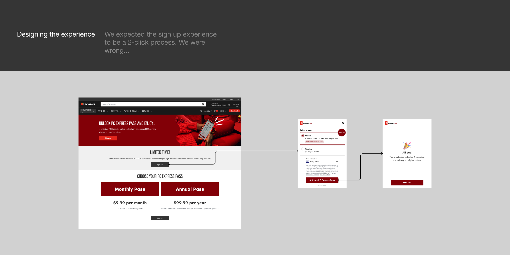
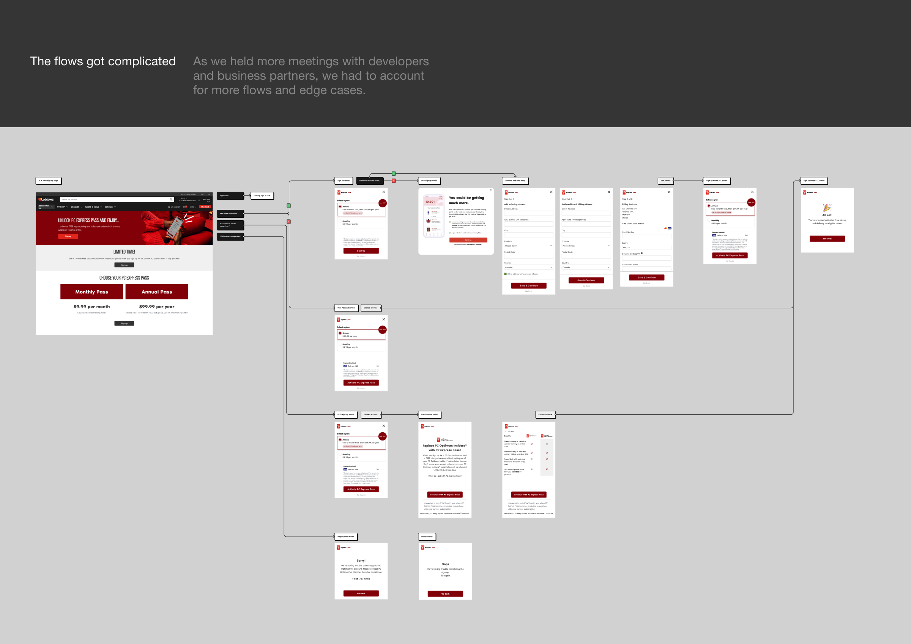
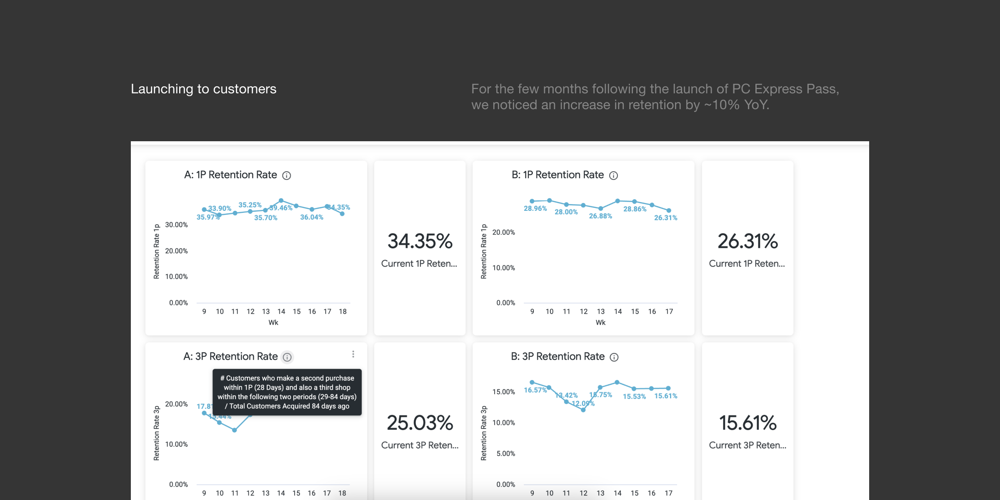

02-2023
Delivering Value to our Delivery Customers

PC Express Pass launched in February 2023, and has since reached over 11% conversion to-date. I worked
closely with our business and marketing teams to take this project from inception to launch.
Who I worked with
Max Romanoff - Designer
Allan De Los Angeles - Design Lead
Timeline
Oct 2022 - Feb 2023
4 months
What even is "PC Express"?
Being the largest grocer in Canada — Loblaws and it's other banner stores — we have a duty and
responsibility to our customers and their families.
Though I'm a little biased, one of the most amazing services we offer to our customers is PC Express
— a
way to order your groceries online and receive them through delivery or by picking them up at the
store.
"So if this is so great already, why do you have a case study for it?" Good question! It's our fees.

Combatting our high delivery fees
We were hearing from our customers, time and time again, that fees were a major factor for churn.
It was no secret that we wanted to establish a subscription for PC Express to both offer a way out
for our customers, as well as outline a new revenue stream for our business.
So how did we get started?
Kicking off a design sprint
Along with partners from the business, marketing, design, and development side, I took part in a
week-long design sprint to align on what this subscription pass could look like. Before designing,
we defined the key metrics to success for the subscription — of which increasing retention was the
most voted on (after the free-trial period).
Defining the key flows
I worked with my manager and a few developers to define the key flows for PC Express Pass. At a high
level, we’d defined it as 3 parts: Discovery of the subscription service, the Core Experience of
signing up and having the pass, and the Managing of the subscription. When defining this, we
expected a large part of this experience to be ads for discovery, and a short and simple experience
for signing up for the pass.

We usability tested the experience at the end of the design sprint and realized we needed to be more
aggressive with the branding as we saw banner blindness was going to be an issue. We imagined the flow,
for existing customers, would be as simple as clicking Sign Up and confirming their payment details to
continue.

Facing technical challenges
As we had more presentations with dev teams, we learned more about how challenging it’d be to launch
a subscription. We needed to use a 3rd party to help us solve this, and thus, our “short and simple”
flow ballooned to something more… I led weekly connects with our dev teams (both app and web) to
iteratively work through these flows and identify what other surprises could come up.
Though I was very upset with the changes to our existing simple flow, we put this in front of a few
customers in a usability test and no one had commented on the length of the flow and all
participants were able to complete the flow. It became a lesson in, what might be frowned on
design-wise, might not make as big of a deal for customers… Though this doesn’t mean we shouldn’t
strive for the best experience.

Launching to our customers
Before launch, we scrambled to UAT the solution on all platforms to make sure we caught all the bugs
and it worked as expected all regions in Canada. And when it did launch, I remember how loud the
office was and how excited everyone was, just eyes glued to the Slack channel for updates in sign up
numbers.
To date, we’re at approximately 11% conversion, and we saw that we increased our retention numbers
by 10% YoY.

What I learned
In leading the PC Express Pass project, I addressed challenges from inception to launch.
Collaborating with diverse teams, we tackled high fees, shaped a user-centric flow, and overcame
technical hurdles. Through usability testing and rigorous platform checks, we achieved an 11%
conversion rate and a 10% YoY boost in retention. This experience emphasized the importance of
adaptability, user feedback, and agile decision-making in delivering a successful product.